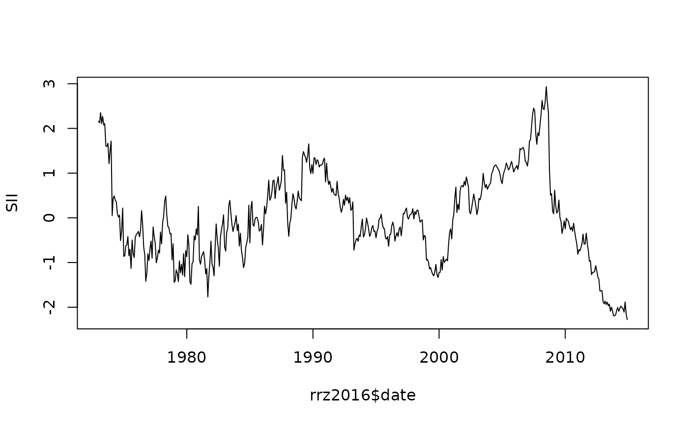

Equity Premium and Short Interest Index (Rapach, Ringgenberg & Zhou, 2016)
Source:R/rrz2016-data.R
rrz2016.RdMonthly U.S. log excess return on the S&P 500 and the short interest index (SII) used in Rapach, Ringgenberg, and Zhou (2016), "Short interest and aggregate stock returns" (Journal of Financial Economics, 121, 46-65). Sample period 1973-01 to 2014-12.
Format
A data frame with 504 rows and 3 variables:
- date
First-of-month
Date.- r
Log excess return on the S&P 500: \(\log(1 + R_t) - \log(1 + rf_{t-1})\).
- SII
Short interest index, standardised linearly-detrended log EWSI.
Source
Replication archive of Rapach, Ringgenberg, and Zhou (2016): https://github.com/GabboCg/rrz2016.
Details
SII is constructed as standardised residuals from a linear regression of \(\log(\text{EWSI}_t)\) on a time trend, where \(\text{EWSI}_t\) is the equal-weighted mean across all firms of the number of shares held short normalised by shares outstanding.
References
Rapach, D. E., Ringgenberg, M. C. and Zhou, G. (2016). Short interest and aggregate stock returns. Journal of Financial Economics, 121(1), 46-65.
Examples
data(rrz2016)
head(rrz2016)
#> date r SII
#> 1 1973-01-01 -0.021110001 2.159183
#> 2 1973-02-01 -0.038901258 2.125340
#> 3 1973-03-01 -0.005749409 2.354275
#> 4 1973-04-01 -0.045950829 2.109134
#> 5 1973-05-01 -0.019251323 2.268280
#> 6 1973-06-01 -0.010477457 2.075074
plot(rrz2016$date, rrz2016$SII, type = "l",
xlab = NULL, ylab = "SII")
